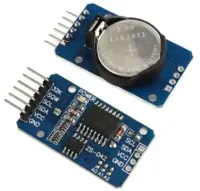
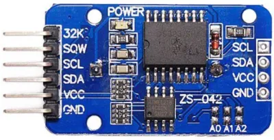
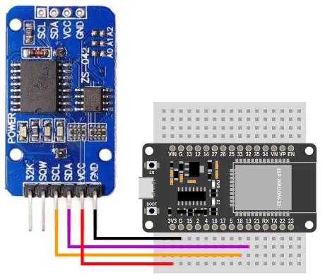
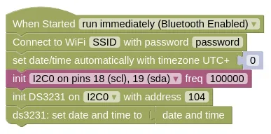
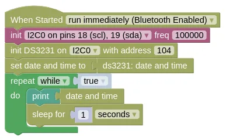

Real-Time Clock (DS3231)

DS3231 is a low-cost real-time clock (RTC). When equipped with a battery, it can continue to track the time even when the microcontroller is powered off.
The ESP32 is capable of retrieving the time from the internet, but this won't work if WiFi isn't available. The DS3231 allows the ESP32 to retrieve the time anywhere, without relying on network connections.
Pins

| Pin | Description |
|---|---|
| VCC | Power for the sensor. Connect to 3V3. |
| GND | Ground pin. This should be connected to the GND pin on the ESP32. |
| SCL | Serial Clock. This is used to communicate with the ESP32 using the I2C protocol (default pin 18). |
| SDA | Serial Data. This is used to communicate with the ESP32 using the I2C protocol (default pin 19). |
| 32K / SQW | Not in use. Leave unconnected. |
Wiring

Code
There are 2 sets of code.
-
Set Time The controller connects to WiFi, retrieve the time, and save it to the DS3231. You need to run this code first, and the DS3231 must be equipped with a battery.
-
Retrieve Time The controller retrieves the time from the DS3231, obtaining the time without requiring WiFi. It then prints out the time every second.
Blocks
Set Time

You must put in your actual WiFi SSID and password in the Connect to WiFi block, or this will not work.
Retrieve Time

Python
Set Time
import ioty.wifi
import ntptime
import machine
import ds3231
ioty_wifi = ioty.wifi.connect('SSID', 'password') # Put in actual WiFi SSID/Password
print('Connected to WiFi')
ntptime.settime()
dateTime = list(machine.RTC().datetime())
dateTime[4] += 0
machine.RTC().datetime(dateTime)
i2c0 = machine.I2C(0, freq=100000)
ds3231_device = ds3231.DS3231(i2c0, 104)
ds3231_device.datetime(machine.RTC().datetime())
Retrieve Time
import machine
import ds3231
import time
i2c0 = machine.I2C(0, freq=100000)
ds3231_device = ds3231.DS3231(i2c0, 104)
machine.RTC().datetime(ds3231_device.datetime())
while True:
print(machine.RTC().datetime())
time.sleep(1)
Results
Set Time
Run this set of code first. Make sure that WiFi is available.
Your device will retrieve the time and save it to the DS3231. As long as the DS3231 is powered by the battery, it will continue to track the time even if the ESP32 is powered off.
Retrieve Time
The ESP32 won't connect to WiFi here, but will retrieve the time from the DS3231.
You should see the correct time printed in the monitor. Even if you reset or power cycle (...power off and on) the ESP32, it will still continue to show the correct time.
class DS3231 - control DS3231 real-time clock
Constructors
ds3231.DS3231(i2c, addr=104)
Creates an DS3231 object.
The arguments are:
-
i2cAn i2c object. -
addrThe i2c address of the DS3231. By default, this should be 104.
Returns a DS3231 object.
Methods
DS3231.datetime(dt=None)
Gets or set the time.
If dt is not provided (None), it will return the date and time.
If dt is provided, it will set the date and time on the DS3231.
In both cases, the date and time should be in a format compatible with the set date and time to block or Python's machine.RTC().datetime().
The arguments are:
dtA list containingyear, month, day, weekday, hours, minutes, seconds, subseconds, or aNone.
Returns None if setting time, else a tuple containing 8 items year, month, day, weekday, hours, minutes, seconds, subseconds:
-
yearAn integer representing the year (eg. 2024). -
monthAn integer representing the month. -
dayAn integer representing the day. -
weekdayAn integer representing the day of the week. -
hoursAn integer representing the hour. -
minutesAn integer representing the minute. -
secondsAn integer representing the seconds. -
subsecondsThis is always0.